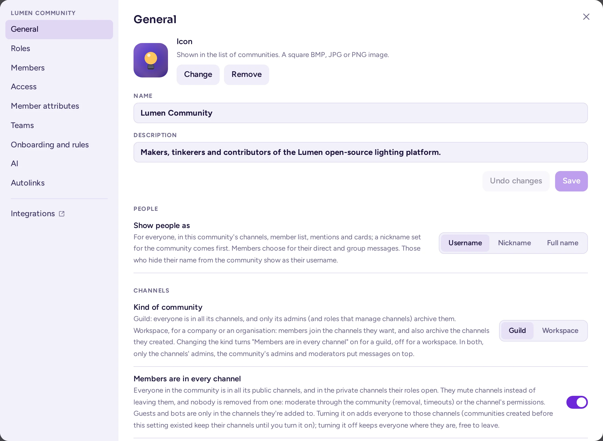
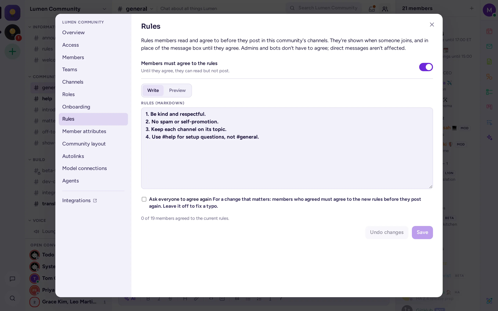
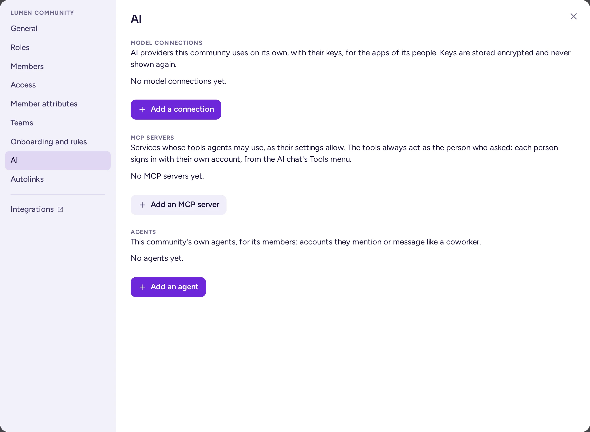
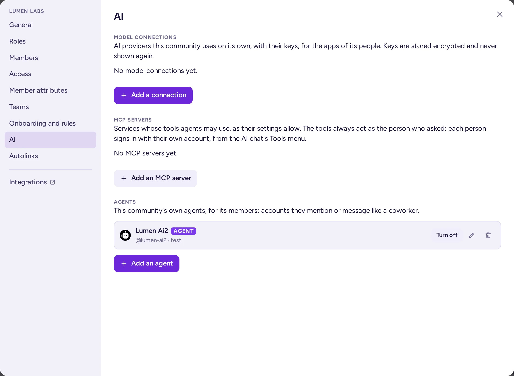

Nastavení komunity
Nastavení pracovního prostoru: jeho název a ikona, kdo se může připojit, jeho typ, fungování členství v kanálech, kam se nováčci dostanou, odkazy, které vytváří automaticky, jeho vlastní poskytovatelé AI a agenti a jeho rozložení.
Otevřete nastavení komunity
Otevřete nabídku pracovního prostoru: klikněte na název pracovního prostoru v horní části seznamu kanálů nebo klikněte pravým tlačítkem na jeho ikonu v liště pracovních prostorů. Poté zvolte Nastavení týmu. Tato položka je viditelná pro administrátory pracovního prostoru, osoby s rolí, která má Administrátor, a systémové administrátory, stejně jako pro kohokoli, kdo spravuje část pracovního prostoru: jeho role, připojení modelů, pravidla členství nebo integrace. Každý vidí pouze karty, které smí používat.
Dialog s nastaveními má tyto záložky:
| Záložka | Co obsahuje |
|---|---|
| Obecné | Název, popis a ikona; poté Kanály (typ komunity, všichni členové ve všech kanálech, výchozí kanál, zprávy o připojení a opuštění), Lidé (viz níže) a Rozvržení komunity (přednastavení a šablony, viz níže). |
| Role | Role komunity, barvy rolí a způsob seskupování lidí v seznamu členů (viz Role a oprávnění). |
| Členové | Členové pracovního prostoru a jejich role a Pozvat lidi (viz Správa členů). |
| Přístup | Veřejné nebo soukromé, povolené domény e-mailu, kód pro pozvání. |
| Atributy členů | Podrobnosti zobrazované na profilových kartách členů (viz Atributy členů). |
| Členství v týmu a Členství v kanálech | Pravidla členství založená na atributech uživatelů. Tyto záložky se zobrazí pouze tehdy, když systémový administrátor zapnul řízení přístupu na základě atributů. |
| Týmy | Týmy komunity, Vytvořit tým a Každý má odznak týmu (viz Týmy v komunitě). |
| Uvedení do problematiky a pravidla | Uvedení do problematiky, uvítací text a otázky pro nové členy (viz Uvedení do problematiky) a Pravidla, se kterými členové souhlasí před zveřejněním příspěvku (viz níže); každá sekce má vlastní tlačítko Uložit. |
| AI | Vlastní připojení modelu komunity a následně její vlastní agenti (viz níže a níže). |
| Automatické odkazy | Vzorové texty, které se v zprávách mění v odkazy. |
Za kartami se nachází Integrace, které obsahují nastavení pro stránky integrací pracovního prostoru: webhooky, příkazy s lomítkem, účty botů, aplikace OAuth a agenti pro ty, kteří je smí spravovat (viz Webhooky, příkazy s lomítkem a boti).
Na kartě Obecné se název a popis ukládají pomocí tlačítek Uložit a Vrátit změny dané sekce, ikona se uloží okamžitě po jejím výběru. Dvě sekce na kartě Uvedení do problematiky a pravidla mají každá vlastní tlačítko Uložit. Na kartách Role, Atributy členů a Rozvržení komunity se změny ukládají průběžně, v editorech jsou tlačítka Uložit a Zrušit a tlačítko Zavřít uzavře dialogové okno. Pokud má karta neuložené změny, Antimatter vás upozorní před přepnutím karty nebo uzavřením dialogového okna.
Název, popis a ikona
Na kartě Obecné:
- Název týmu je název zobrazený v liště komunit a nahoře v seznamu kanálů. Může mít 2 až 64 znaků.
- Popis pomáhá lidem vybrat správnou komunitu, když procházejí ty, do kterých se mohou připojit. Může mít až 50 znaků.
- Ikona týmu je obrázek v liště komunit: soubor BMP, JPG nebo PNG. Pokud není nastavena, lišta zobrazí iniciály komunity. Tlačítko Odebrat obrázek ho odstraní okamžitě.
Adresa komunity (část adresy URL za názvem serveru) se volí při vytváření komunity a následně ji nelze změnit.

Kdo se může připojit
Na záložce Přístup:
- Zobrazitelnost: Veřejný tým se zobrazí v seznamu komunit, které si může prohlédnout a připojit kdokoli s účtem na serveru. Soukromý tým je možné se připojit pouze na pozvání. Přepnutí z veřejného na soukromý vytvoří nový odkaz pro pozvání a starý přestane fungovat.
- Povolit vstup do této komunity pouze osobám s konkrétní doménou e-mailu: Pokud je tato možnost zaškrtnuta, mohou se připojit pouze osoby, jejichž e-mailová adresa končí jednou z domén, které uvedete, například
example.org. Více domén oddělte mezerami nebo čárkami. Toto nastavení je vhodné pro pracovní prostor firmy; pro veřejnou komunitu jej ponechte vypnuté. - Pozvací kód: kód v odkazu pro pozvání do komunity. Vygenerovat znovu vytvoří nový odkaz a předchozí přestane fungovat. To proveďte, pokud byl odkaz pro pozvání sdílen tam, kde neměl být.
Pokud se členové komunity připojují z propojených skupin (adresář, např. LDAP, nastavený systémovým administrátorem), záložka Přístup to uvádí a tyto možnosti nahradí synchronizace skupin.
Připojení závisí také na nastavení serveru: na tom, zda si lidé mohou vůbec vytvořit účet a z jakých e-mailových domén. Jedná se o nastavení serveru; zeptejte se svého systémového administrátora (viz Co se zeptat svého systémového administrátora).
Typ komunity
Na kartě Obecné v sekci Kanály udává Typ komunity aplikaci Antimatter, jak je vaše komunita spravována. Změna se uloží okamžitě a zároveň zapne (pro guild) nebo vypne (pro pracovní prostor) přepínač Členové jsou ve všech kanálech. Tento přepínač můžete následně stále měnit samostatně.
| Typ | Pro | Co se mění |
|---|---|---|
| Společenství | Veřejná nebo hobby komunita. | Kanály archivují pouze administrátoři komunity a role s oprávněním Spravovat kanály. Hovory jsou ve jejích kanálech výchozí vypnuté: hlasové kanály slouží k hovoru. |
| Pracovní prostor | Pracovní prostor firmy nebo organizace. | Administrátoři kanálu (ten, kdo ho vytvořil, a lidé, které jmenovali administrátory) ho také archivují. Hovory v jeho kanálech se řídí výchozím nastavením Hovorů na serveru, které je zapnuté, pokud ho váš systémový administrátor nezměnil. |
V obou typech mohou zprávy umístit na vrchol pouze administrátoři kanálu, administrátoři komunity a moderátoři s oprávněním Spravovat zprávy. Kanál, který má vlastní nastavení Hovorů, si ho zachovává, a přímé a skupinové zprávy nejsou typem ovlivněny.
Nové komunity jsou typu, který pro server zvolil správce systému (Typ nových komunit, což je ve výchozím nastavení Guild, pokud nedojde ke změně). Aplikace přednastaveného rozložení rovněž nastavuje typ: Hybrid a Community vytvoří guild, Workspace vytvoří workspace (viz Rozložení komunity). Šablona si nese typ komunity, ze které byla exportována. Server ukládá a načítá typ komunity pod jejími staršími názvy, community a workplace; pro vás se tím nic nemění.
Všichni ve všech kanálech
Na kartě Obecné v sekci Kanály určuje přepínač Členové jsou ve všech kanálech, jak funguje členství v kanálech ve vaší komunitě.
- Zapnuto: Každý člen je ve všech veřejných kanálech a v soukromých kanálech, které mu umožňují jeho role. Nikdo se nepřipojuje ani neodchází z kanálů: lidé kanály, které nechtějí sledovat, ztlumí. V nabídce kanálu se místo Opustit kanál zobrazuje Ztlumit kanál a moderátoři nemohou nikoho odstranit z jednotlivého kanálu. Pokud chcete někoho z kanálu vyloučit, odeberte ho z komunity, zablokujte mu přístup nebo změňte oprávnění kanálu. Kanály nezobrazují zprávy o připojení a odchodu a nemají žádné nastavení pro zobrazení zpráv o připojení/odchodu pro jednotlivé kanály.
- Vypnuto: lidé se připojují ke kanálům, které chtějí, mohou je opustit a administrátoři kanálů mohou přidávat a odebírat členy.
Hosté a boti se nikdy nepřidávají automaticky: jsou pouze v kanálech, do kterých jsou přidáni. Soukromé kanály, které neotevírají role (kanály pouze na pozvání), nejsou ovlivněny ani v tomto režimu.
Přepínač se uloží hned, jak ho změníte. Zapnutím se všichni přidají do kanálů, které mohou vidět; u velké komunity to trvá chvíli. Vypnutím zůstanou všichni tam, kde jsou, a mohou se kdykoli odhlásit.
Guildy mají tuto funkci ve výchozím nastavení zapnutou, pokud správce systému toto výchozí nastavení nezměnil (Nové guildy přidají všechny členy do všech kanálů v Systémové konzoli); workspaces ji nikdy nemají zapnutou. Komunity vytvořené před zavedením tohoto nastavení mají funkci vypnutou, dokud ji nezapnete.
Výchozí kanál
Výchozí kanál je místo, kam se nováčci dostanou. Všichni v něm jsou a nemohou ho opustit. Při vytvoření komunity je jejím výchozím kanálem Obecné (jeho adresa je general).
Starší komunity měly Town Square. Aktualizace na Antimatter 0.9.0 ho přejmenovala na General s adresou general, pokud komunita neměla již kanál s touto adresou; název, který jste mu sami dali, se zachová. Staré odkazy na town-square stále vedou do výchozího kanálu komunity.
Chcete-li zvolit jiný výchozí kanál, použijte Výchozí kanál na kartě Obecné nebo otevřete nabídku veřejného kanálu a zvolte Nastavit jako výchozí kanál. Výchozí kanál musí být veřejný kanál, který není archivovaný. Všichni členové jsou přidáni do nového výchozího kanálu.
Kanály Obecné, Vítejte (ve starších komunitách nazvaný Off-Topic) a výchozí kanál lze archivovat, ale pouze administrátory komunity. Pokud je výchozí kanál archivován, komunita již nemá žádný výchozí kanál: v nastavení se zobrazí Archivovaný kanál a lidé se dostanou do prvního kanálu, ve kterém se nacházejí, dokud nezvolíte jiný. Když kanál Obecné neexistuje, nabídka obsahuje možnost Žádný: první kanál, ve kterém se každý nachází.
Zprávy o připojení a odchodu
Na kartě Obecné, v sekci Kanály, možnost Zprávy o připojení a odchodu určuje kanál, který informuje o tom, kdo se připojuje ke komunitě a kdo ji opouští: jsou v něm všichni. Nové komunity mají pro tento účel kanál Vítejte; starší komunity si ponechávají kanál, který používaly dříve (jejich výchozí kanál, často Off-Topic), beze změn; nebo si mohou zvolit možnost Vypnuto pro žádný kanál. Nová komunita získá také dva výchozí kanály: Obecné, kde se lidé po připojení ocitnou, a Vítejte, který slouží pro tyto zprávy; kanál Off-Topic se pro nové komunity již nevytváří. Pro existující komunity se nic nemigruje: jejich kanály, typy a zprávy zůstávají beze změn.
Lidé: Zobrazovat lidi jako
Na kartě Obecné, v sekci Lidé, možnost Zobrazovat lidi jako určuje, zda se v kanálech této komunity, v seznamu členů, ve zmínkách a na kartách zobrazují Uživatelské jméno, Přezdívka nebo Celé jméno. Dokud nezvolíte vlastní nastavení, použije se výchozí hodnota serveru. V režimu přezdívek má přednost přezdívka, kterou daná osoba nastavila pro tuto komunitu (viz Obnovit přezdívku a Obnovit obrázek); pokud není nastavena, použije se přezdívka z sekce Můj účet. Toto nastavení je nezávislé na možnosti Zobrazovat lidi jako v osobním nastavení každého uživatele, která se vztahuje pouze na jeho přímé a skupinové zprávy.
Pravidla
Pracovní prostor může požádat své členy, aby si přečetli a souhlasili s jeho pravidly před tím, než začnou přispívat v jeho kanálech. Dokud nesouhlasí, mohou vše číst, ale nemohou tam přispívat, odpovídat ani posílat soubory; mohou stále reagovat a přímé a skupinové zprávy nejsou dotčeny. Administrátoři pracovního prostoru (a role s Administrátor), systémoví administrátoři a boti nemusí souhlasit. Toto je vynucováno na straně serveru ve všech aplikacích.
- Otevřete kartu Onboarding a pravidla v nastavení komunity, v sekci Pravidla.
- Napište pravidla pod Napsat v Markdownu (maximálně 16 000 znaků) a zkontrolujte je pod Náhled.
- Zapněte Členové musí souhlasit s pravidly.
- Klikněte na Uložit.
Na kartě je uvedeno, kolik členů komunity souhlasilo s aktuálními pravidly. Pokud je později změníte, u důležitých změn zapněte Vyžádat souhlas znovu od všech: všichni musí souhlasit s novou verzí, než budou moci znovu přispívat. Pokud tuto možnost ponecháte vypnutou (například kvůli opravě překlepu), ti, kteří již souhlasili, zůstávají souhlasícími. Vypnutím přepínače umožníte všem znovu přispívat. To, co členové vidí, je popsáno v části Co vidí nováčci.

Automatické odkazy
Automatické odkazy mění text v zprávách na odkazy při jejich odeslání. Typické použití jsou klíče úkolů: LUM-12 se stane odkazem na daný úkol ve vašem trackeru. Platí pro zprávy odeslané ve vaší komunitě, v každé aplikaci, oznámení a vyhledávání, protože server přepíše zprávu před uložením. Kód, odkazy a obrázky se nemění.
Na záložce Automatické odkazy:
- Vyberte Přidat automatický odkaz. Začněte s hotovým vzorem (kódy problémů, pull requests, merge requests, identifikátory CVE) nebo s Prázdný.
- Dejte mu název, například "Jira issues".
- Do Vzor napište regulární výraz, například
(PROJ-\d+). - Do pole Změní se na zadejte, na co se shoda má převést.
$0je celý shodný text,$1,$2atd. jsou skupiny vzoru. Například:[$1](https://issues.example.com/browse/$1). - Vyberte, kde má nastavení platit: Všechny kanály nebo jen některé kanály.
- Volitelně zaškrtněte Pouze celá slova a I zprávy botů, pokud mají být na odkazy převáděny i zprávy odesílané boty.
- Do pole Vyzkoušejte na zprávě napište příklad, abyste viděli výsledek, a poté zvolte Uložit.
Každý automatický odkaz má políčko Zapnuto, které ho dočasně vypne bez toho, abyste ho museli smazat. Převádět na odkazy i upravené zprávy aplikuje automatické odkazy i na zprávy, když se upraví; jinak se odkazy přidávají pouze k novým zprávám. Tým může mít až 100 automatických odkazů.
Připojení k modelům
Připojení modelu je poskytovatel AI, jako je služba kompatibilní s OpenAI nebo Anthropic, s jeho adresou a klíčem. Systémový administrátor nastaví připojení pro celý server. Komunita může mít také vlastní, které mohou aplikace jejích členů používat v kanálech komunity. Vestavěné funkce AI v Antimatter (přepisování, shrnutí, automatický překlad, převod textu na řeč) používají připojení pro celý server vybraná systémovým administrátorem, nikoli připojení komunity.
Správci komunity a role s oprávněním Spravovat spojení s modely je spravují na kartě AI, v sekci Spojení s modely. Zvolte Přidat připojení a vyplňte:
- Název a Poskytovatel: OpenAI-compatible (většina poskytovatelů a brán) nebo Anthropic. Šablony automaticky vyplní obvyklé hodnoty.
- Base URL a API klíč. Klíč se ukládá zašifrovaně a nikdy se nezobrazí znovu, pouze jeho poslední čtyři znaky. Další hlavičky slouží pro brány, které je vyžadují.
- Modely: model používaný pro každou funkci, pokud aplikace neurčí jiný. Načíst modely vypíše ty, které koncový bod nabízí.
- Omezení: požadavky za minutu a tokeny za měsíc, pro připojení i pro jednotlivce. Prázdné pole nebo 0 znamená neomezeně.
- Kdo ho může používat: Všichni v komunitě, nebo jen týmy, role a administrátoři, které vyberete. Hosté ho mohou používat pouze při zapnuté možnosti Hosté také, která je výchozí vypnutá.
Tlačítko Otestovat připojení umožňuje prověřit spojení před uložením nebo po něm. U každého připojení se zobrazuje využití v běžném měsíci a tlačítko Využití poskytuje podrobnosti. Smazání připojení smaže jeho klíč a funkce, které toto připojení využívaly, přestanou AI používat. Na kartě AI jsou pod spojeními s modely uvedeny také vlastní servery MCP komunity, které slouží jako nástroje pro její agenty.

Agenti
Agent je AI asistent s vlastním účtem, označený štítkem AGENT: členové komunity ho mohou zmínit nebo mu poslat zprávu jako kolegovi a on odpoví. Správce systému může nastavit agenty pro celý server; vaše komunita může mít také vlastní agenty pro své členy. Na kartě AI, v sekce Agenti, kterou vidí správci komunity:
- Zvolte Přidat agenta.
- Zvolte Typ: Vestavěný (odpovídá za něj Antimatter pomocí připojení modelu) nebo Externí agent (odpovídá za něj program jinde, pomocí tokenu agenta: token mu přidělí systémový správce).
- Zadejte Zobrazovaný název, Uživatelské jméno (jak ho lidé zmiňují) a volitelně Popis.
- U vestavěného agenta vyberte jeho Připojení modelu: buď vlastní připojení komunity, nebo připojení sdílené systémovým správcem napříč celým serverem. Pole Model nechte prázdné pro chatový model daného připojení a napište jeho Pokyny: kdo agent je a jak funguje. Lidé, kteří s ním komunikují, tyto pokyny nevidí.
- V sekci Kdo s ním může mluvit ponechte Všichni v komunitě, nebo zvolte role a kanály. Hosté s ním mohou mluvit pouze při zapnuté možnosti I hosté.
- Zvolte Přidat agenta. Agent se přidá do komunity.
Vestavěný agent odpovídá jako osoba, která se ptá, a s jejími právy: čte pouze to, co může číst ona, a jeho použití se započítává do jejích limitů na připojení. Přepínač Nástroje ve formuláři agenta umožňuje používat vlastní nástroje Antimatteru, nástroje jednotlivých aplikací a vlastní servery MCP komunity nebo server-wide server sdílený s komunitou (viz Nástroje). Ze seznamu můžete agenta upravit, vypnout (nikdo s ním nemůže komunikovat, dokud ho znovu nezapnete) nebo smazat; jeho zprávy zůstávají zachovány. To, jak agenti používají členové, je vysvětleno v AI agenti.

Rozvržení komunity, předvolby a šablony
Rozvržení je struktura komunity: její kategorie pro všechny a kanály v nich, její kanály, její role a jejich oprávnění, její onboarding a její typ. Otevřete sekci Rozvržení týmu na kartě Obecné.
Nabízí se tři předvolby:
| Předvolba | Co nastaví |
|---|---|
| Hybridní (doporučeno) | Uzamčená kategorie „Information“ s kanálem General, otevřená kategorie „Community“ s kanálem Off-Topic, kde si členové zakládají vlastní kanály, a role „Moderators“. Typ je nastaven na Guild. |
| Komunita | Kategorie, které upravují pouze administrátoři („Information“ s kanálem General a „Channels“ s kanálem Off-Topic), a role „Moderators“. Typ je nastaven na Guild. |
| Pracovní prostor | Každý si upravuje vlastní kategorie a archivuje kanály, které vytvořil. Odstraní kategorie pro všechny; role zůstávají zachovány. Typ je nastaven na Workspace, což také vypne možnost Členové jsou ve všech kanálech. |
Role „Moderátoři“ ze šablon může upravovat a mazat zprávy jiných lidí, přepínat zprávy na vrchol, přejmenovávat kanály a spravovat jejich členy, a také odstraňovat a dočasně blokovat uživatele. Nemůže však archivovat kanály (viz Role moderátorů).
Prvníkrát, když správce týmu otevře nový tým, který nemá kategorie pro všechny ani role, Antimatter jednou nabídne přednastavení pod Nastavit následovaným názvem týmu. Zvolte Teď ne, pokud chcete přeskočit.
Kopírování rozvržení do jiné komunity
- V komunitě, kterou chcete kopírovat, otevřete sekci Rozvržení týmu na kartě Obecné a zvolte Exportovat jako šablonu. Váš prohlížeč stáhne soubor JSON.
- V druhé komunitě otevřete stejnou sekci, zvolte Použít šablonu… a vyberte soubor.
Použití předvolby nebo šablony přidá chybějící kanály a role, aktualizuje role se stejným názvem, zařadí kanály do kategorií, nahradí uvítací zprávu a nastaví typ komunity. Nic jiného nezmění, s výjimkou kategorií pro všechny, které šablona neobsahuje. Export obsahuje pouze kanály, jejichž jste členem, a nezahrnuje žádné zprávy. Šablony exportované před aktualizací na 0.9.0, které obsahovaly Town Square, nahradily tento kanál kanálem General.
Šablona obsahuje přednastavení každého kanálu (viz Karta Typ), například fórum Q&A. Pokud ji použijete na serveru, který dané přednastavení nezná, vytvoří se místo toho jednoduchý kanál Chat.
Nastavení, která nepatří komunitě
- Přímé zprávy a údaje profilu: Každý člen si volí vlastní výchozí nastavení v Nastavení › Soukromí a bezpečnost a pro tuto komunitu si může zvolit jiná nastavení v Nastavení soukromí v nabídce komunity. Zde rozhoduje o tom, zda jeho přímé zprávy budou doručeny normálně, budou čekat jako žádosti, nebo budou zamítnuty, a které údaje jeho profilu budou vidět lidem v této komunitě. Administrátoři komunity to nemohou nastavit za ně, ale stále vidí vlastní atributy komunity (viz Ignorování a blokování).
- Vlastní emoji, aplikace, omezení počtu členů a typ nových komunit nastavuje systémový administrátor pro celý server. Systémový administrátor může také pro celý server vypnout seskupování členů podle rolí, což má přednost před vaším výběrem v Seznamu členů komunity.
Opusťte a smažte komunitu
Kdokoli může tým opustit pomocí Opustit tým dole v menu týmu. Správci týmů nemohou tým archivovat ani smazat z rozhraní Antimatter: systémový správce to provede v Systémová konzole › Správa uživatelů › Týmy, otevřením týmu a zvolením Archivovat tým.